Everything you need to manage your website, content, events, and leads
Your website is built with Next.js and runs on Vercel. Content is managed through Sanity CMS (blog posts and retreats), events come from Acuity Scheduling, and quiz leads are saved to Airtable. Blog posts can also be generated with AI using the Admin Panel.
| Live website | lyncevents.com |
| Sanity Studio | lyncevents.com/studio |
| Admin Panel | lyncevents.com/admin |
| Vercel Dashboard | vercel.com (lynccommunity account) |
| Acuity Scheduling | acuityscheduling.com |
| Airtable (Leads) | airtable.com |
The website is hosted on Vercel under the lynccommunity account. It auto-deploys every time code is pushed to the main branch on GitHub.
main branch on GitHub| Account | lynccommunity |
| Project name | lync |
| Framework | Next.js 16 |
| GitHub repo | facundoexposito/lync (main branch) |
Sanity is your content management system. It handles blog posts and retreats. You access it through the Studio, which is built right into your website.
lyncevents.com/studio in your browserlyncevents.com/studio for quick access. Works on any device with a browser.
| Type | What It Manages | URL Pattern |
|---|---|---|
| Retreat | Retreat pages with pricing, itinerary, images, schedule | /retreats/[name] |
| Blog Post | Blog articles with sections, images, categories | /blog/[title] |
| Field | Status | What It Does |
|---|---|---|
| Title | Required | Name shown everywhere (cards, page title, navigation) |
| Slug | Required | URL path — click "Generate" to create from title |
| Hero Image | Required | Large banner at top. Also used for social media previews. |
| Subtitle | Optional | Secondary tagline (e.g., "A Journey Back to Your Heart") |
| Location / Venue / Dates | Optional | Where and when the retreat takes place |
| Duration / Group Size | Optional | E.g., "7 nights" / "10 women" |
| Pricing | Optional | Room tiers with price and perks |
| Itinerary | Optional | Day-by-day programme (day, emoji, title, highlights) |
| Daily Schedule | Optional | Typical day timetable (time, title, description) |
| Inclusions | Optional | What's included + what's not |
| Bento / Slideshow Images | Optional | Photo grid and auto-rotating carousel |
| Founder Story | Optional | Personal narrative about the retreat's origin |
| Booking URL | Optional | When set, "Book Now" button + sticky bar appear |
| Brochure PDF | Optional | "Download Brochure" button appears when uploaded |
| Contact Email | Optional | "Questions? Reach us at..." line in pricing |
Sections automatically show or hide based on whether you've filled in the content. Empty sections don't appear — no blank spaces, no broken layouts.
The admin panel at lyncevents.com/admin lets you generate blog posts using AI. You provide a brief, Claude AI writes the post matching your brand voice, and you publish it directly to Sanity.
lyncevents.com/adminEvery AI-generated post follows this structure:
| Category | Card Color | Example Topics |
|---|---|---|
| Nightlife | Rose / pink | Girls' nights, rooftop dinners, cocktail events |
| Meetups | Amber / warm | Coffee meetups, brunch, social gatherings |
| Wellness | Emerald / green | Yoga, meditation, wellness workshops |
You can also create or edit blog posts directly in the Sanity Studio. This is useful for editing posts after they've been published, or creating posts without the AI flow.
| Field | Status | What It Does |
|---|---|---|
| Title | Required | Post title on cards and article page |
| Slug | Required | URL path — click "Generate" from title |
| Date | Required | Publication date shown on the article |
| Category | Required | Nightlife, Meetups, or Wellness |
| Excerpt | Required | Short summary for cards and SEO (~180 chars) |
| Cover Image | Required | Main image. Set a hotspot for responsive cropping. |
| Content Sections | Required | Sections with optional heading + paragraphs |
Posts created via the Admin Panel appear in the Studio as regular Blog Post documents. You can edit any field and re-publish — changes go live within seconds.
Events on the website are pulled automatically from your Acuity Scheduling account. Just create events in Acuity and they appear on the site.
| Category | Keywords Detected |
|---|---|
| Wellness | yoga, pilates, meditation, breathwork, sound bath, spa, stretch, mindful |
| Adventure | run, hike, climb, outdoor, kayak, surf, bike, walk, tour, explore |
| Creative | craft, paint, art, pottery, workshop, cook, bake, flower, vision board |
| Nightlife | club, party, rooftop, cocktail, bar crawl, night out, DJ |
| Social | brunch, dinner, lunch, coffee, picnic, game night, meetup |
If an event doesn't have a photo in Acuity, the website uses a category-specific fallback image from your brand photos.
The quiz at lyncevents.com/quiz collects lead information and saves it to your Airtable base. There's also a quiz preview embedded on the homepage.
| Step | Question | Options |
|---|---|---|
| 1 | What brings you to Madrid? | Studying, Working, Traveling, Living here |
| 2 | Social life right now? | Starting from zero, Building, Solid but want more, Thriving |
| 3 | Age bracket | 18-22, 23-27, 28-32, 33+ |
| 4 | Ideal night out? | Dinner & wine, Dancing, Creative, Wellness, Exploring, Spontaneous |
| 5 | When are you usually free? | Weekday mornings, Evenings, Weekends, Flexible |
| 6 | Preferred group size? | Small (4-6), Medium (8-12), Large (15+), No preference |
| 7 | Contact info | Name, email, phone (optional), nationality |
| Field | Description |
|---|---|
| name | Full name |
| Email address | |
| phone | Phone number (optional) |
| nationality | Nationality from dropdown |
| purpose | What brings them to Madrid |
| availability | When they're free |
| groupSize | Preferred group size |
| source | "homepage" or "quiz-page" |
| status | Default: "New" |
| quizAnswersJSON | Full JSON of all quiz answers |
| submittedAt | Timestamp |
| Page | URL | Content Source |
|---|---|---|
| Homepage | / | Static + Acuity events + Sanity blogs |
| Events | /events | Live from Acuity (5-min refresh) |
| Quiz | /quiz | Static questions + Acuity for results |
| Blog Listing | /blog | Sanity CMS |
| Blog Article | /blog/[slug] | Sanity CMS |
| Retreats Listing | /retreats | Sanity CMS + Acuity |
| Retreat Detail | /retreats/[slug] | Sanity CMS |
| About | /about | Static (founders story) |
| Study Abroad | /study-abroad | Static (tabbed content) |
| Accommodations | /accommodations | Static (Collegiate partnership) |
| Guides | /guides | Static (city guides) |
| Admin | /admin | Password-protected |
| Sanity Studio | /studio | Google auth |
/sitemap.xml/robots.txtThese must be set in the Vercel dashboard under Settings → Environment Variables. They connect the website to your external services.
| Variable | Where to Find |
|---|---|
ACUITY_USER_ID | Acuity → Integrations → API Credentials |
ACUITY_API_KEY | Acuity → Integrations → API Credentials |
| Variable | Value / Where to Find |
|---|---|
NEXT_PUBLIC_SANITY_PROJECT_ID | kxf081e5 |
NEXT_PUBLIC_SANITY_DATASET | production |
NEXT_PUBLIC_SANITY_API_VERSION | 2026-04-20 |
SANITY_API_TOKEN | Sanity → Manage → API → Tokens (Editor role) |
SANITY_REVALIDATION_SECRET | Any random string (secures the webhook) |
| Variable | Where to Find |
|---|---|
AIRTABLE_PAT | Airtable → Account → Developer Hub → Personal Access Tokens |
AIRTABLE_BASE_ID | Airtable base URL: the appXXXXXX part |
AIRTABLE_TABLE_NAME | Default: Leads |
| Variable | What It Does |
|---|---|
ADMIN_PASSWORD | Password for /admin. Set to anything secure. |
ANTHROPIC_API_KEY | Claude API key for blog generation. From console.anthropic.com |
ANTHROPIC_MODEL | Optional. Defaults to claude-sonnet-4-5 |
.env.local (which is git-ignored).
lyncevents.com/api/webhooks/sanity?secret=YOUR_SECRETACUITY_USER_ID and ACUITY_API_KEY are set in Vercel.AIRTABLE_PAT and AIRTABLE_BASE_ID in Vercel.AIRTABLE_TABLE_NAME (default: "Leads").ADMIN_PASSWORD must be set in Vercel and match exactly (case-sensitive).ANTHROPIC_API_KEY is set and valid at console.anthropic.com.Click the existing image → "Clear field" → upload the new one. Set a hotspot (drag the circle to the important part of the image).
| Image | Recommended Size | Aspect Ratio |
|---|---|---|
| Hero (retreat) | 2400 × 1350px | 16:9 |
| Cover (blog) | 2400 × 1200px | 2:1 |
| Card | 1200 × 900px | 4:3 |
| Intro (retreat) | 1200 × 1600px | 3:4 portrait |
| Bento grid | 1200 × 900px+ | Mix |
JPG works best for photos. Keep files under 5MB — Sanity optimizes automatically.